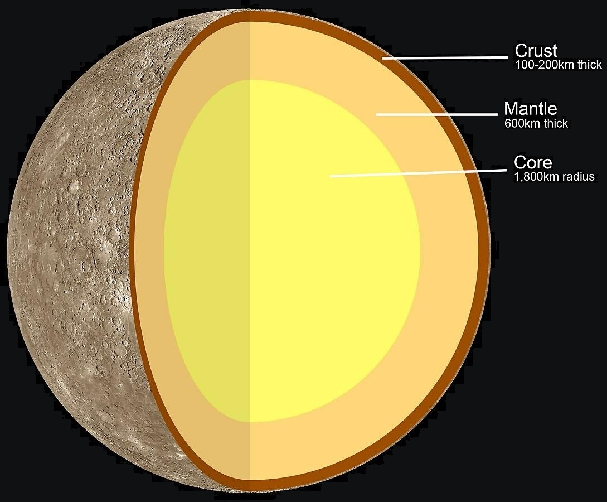

Key Facts & Summary

- Mercury does not have any moons or rings.
- Mercury is the smallest planet.
- Mercury is the closest planet to the Sun.
- Your weight on Mercury would be 38% of your weight on Earth.
- A solar day on the surface of Mercury lasts 176 Earth days.
- A year on Mercury takes 88 Earth days.
- It’s not known who discovered Mercury.
Orbit
Mercury's highly eccentric, egg-shaped orbit it takes a trip around the Sun every 88 days thus 1 orbit/year is the equivalent of 88 Earth days. Mercury travels through space at nearly 29 miles or 47 kilometers per second, faster than any other planet.The diagram above illustrates the effects of the eccentricity, showing Mercury’s orbit overlaid with a circular orbit having the same semi-major axis.
Rotation
The planet has a 3:2 spin–orbit resonance, rotating three times for every two revolutions around the Sun. Mercury was captured into the 3:2 spin–orbit state at a very early stage of its history, within 20 or 10 million years after its formation.Moving fastest in its elliptical orbit around the Sun, and it is closest to the Sun, each rotation is not accompanied by a sunrise and sunset like on most other planets. The morning Sun appears to rise briefly.
STRUCTURE
Mercury is a terrestrial planet having three main layers: a core, mantle and crust. Mercury’s crust has no tectonic plates and its iron core is enormous, making up 85% of the planets radius while Earth’s inner and outer core, account for about 55%.Because of the core’s unusual size, it influences Mercury’s overall size by causing it to shrink. The iron core has slowly cooled and contracted for about 4.5 billion years. By doing this, it pulled the surface inward, and thus has reduced the planet’s size between 1 – 7 km or 4 miles.
The planet consists of about 70% metallic and 30% silicate material leading to its high density and thus placing it as the second densest planet. It is believed that if the effects of the gravitational compression were to be factored out from both Mercury and Earth, Mercury would take the first place as the densest. This density also indicates that its core is huge and rich in iron. Mercury’s crust is estimated to be around 35 km or 22 mi thick.
SURFACE AND GEOLOGY
Very similar in appearance to Earth’s moon, Mercury’s surface is scarred by many impact craters from comets or meteoroids.There are also extensive mare-like plains present and the craters also indicate that the planet has been geologically inactive for billions of years.It is believed that Mercury was heavy bombarded by comets and asteroids during and shortly after its formation 4.6 billion years ago, as well as during a possibly separate subsequent event called the Late Heavy Bombardment that ended 3.8 billion years ago.
Temperatures on the surface of Mercury are both hot and cold. During the day, temperatures on the surface can reach up to 800 degrees Fahrenheit / 430 degrees Celsius. Because the planet has no atmosphere to retain that heat, nighttime temperatures on the surface can drop to -290 degrees Fahrenheit / -180 degrees Celsius. These changes in temperature are the most drastic in the entire Solar System.
These crater plains appear to have obliterated many earlier craters. Unlike lunar maria, the smooth plains of Mercury have the same albedo as the older inter-crater plains. Another interesting feature of Mercury’s surface is the numerous compression folds or rupes that crisscross plains. A theory suggests that as Mercury’s interior cooled, it contracted and its surface began to deform, creating wrinkle ridges and lobate scarps associated with thrust faults. These features have indicated that Mercury’s radius became smaller, shrinking in the range of 1 to 7 km or 4 miles.